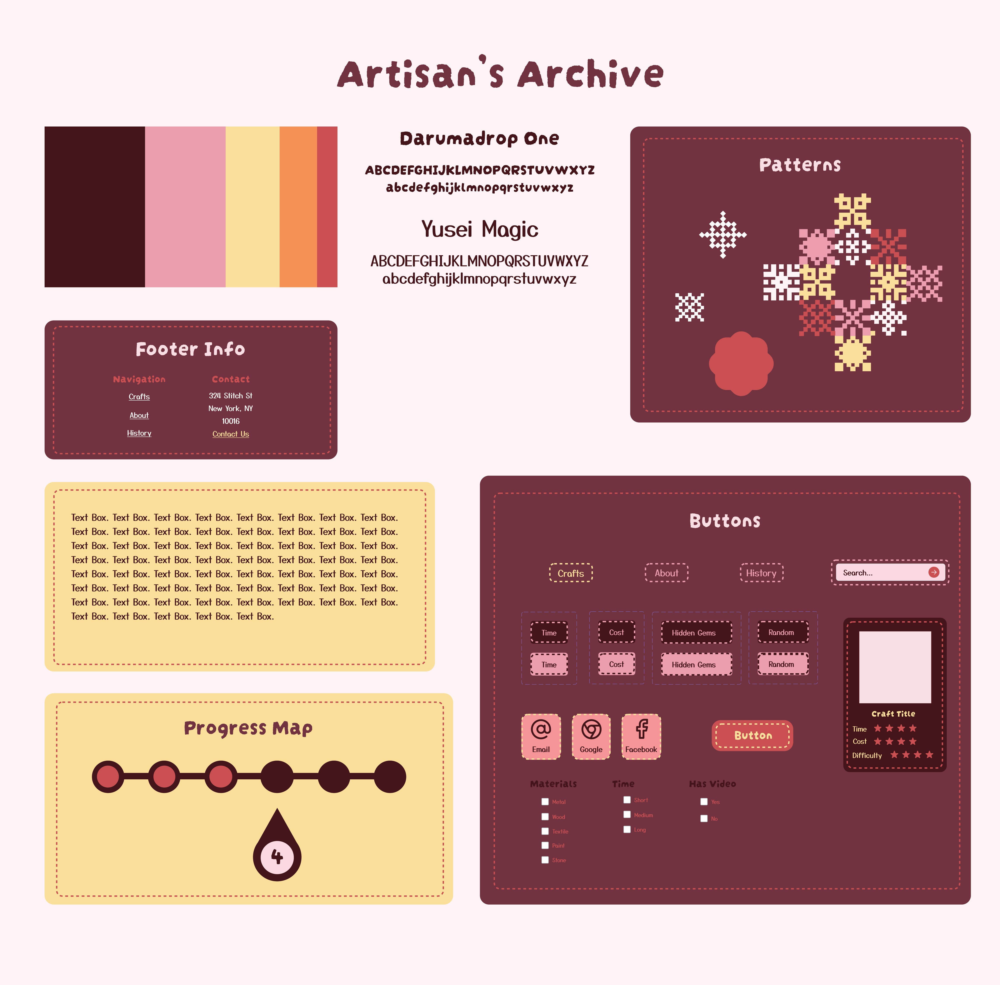

There are an incredible range of craft skills practiced by some of the best craftspeople in the world, but many of these skills are in the hands of individuals who have been unable to pass them on and keep their craft alive. Heritage Crafts Red List of Endangered Crafts, first published in 2017, was the first report of its kind to rank traditional crafts by the likelihood they would survive to the next generation. Based on this list, Artisan’s Archive aims to keep these crafts alive by providing tutorials directly from artisans themselves. Keeping history alive has never been so fun!
